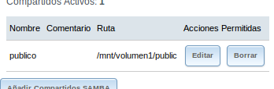

- Módulo: Fundamentos de Hardware
- Título del trabajo Almacenamiento NAS
- Componentes del grupo: Abel Garcia
- Curso Académico: 2013/2014
- Fecha de entrega: 30 de Abril de 2014
- Crear la MV en VBox.Elegir MV del tipo FreeBSD
- Además del disco duro virtual donde instalar FreeNAS, vamos a añadir a la máquina virtual 2 discos más de 2GB
- Configurar MV con la red en modo puente. Para que al terminar podamos acceder al NAS desde cualquier equipo de nuestra red
- Comenzamos la instalación
- Fijarse que los discos y elegir el ada0
- Apagar el sistema. Quitar el disco de instalación
- Vamos a realizar la configuración inicial. Éste es el aspecto del menú:
- Pulsamos 1 para configurar el interfaz de red: Configurar la IP y la máscara de red.
- Pulsamos 4 (Default static route) para configurar la puerta de enlace
- Pulsamos 6 para configurar el servidor DNS

- En la opción 9 entramos en una shell y podemos probar algunos comandos
- ifconfig
- df -hT
- Para consultar las particiones usamos los comandos BSD siguientes:
- fdisk /dev/ada0
- fdisk /dev/adad1
- fdisk /dev/ada2
- Comprobar que esto ha funcionado
- Para acceder al PANEL de configuración (por entorno gráfico) de FreeNAS, iniciamos un navegador web desde otro PC de la red. Y navegamos usando la IP del servidor FreeNAS.
Ahora vamos a crear un VOLUMEN a partir de los dos discos creados de 2GB.
- Ir a "Storage -> Volumes -> UFS Volume Manager".
- Elegir mirror (RAID1) con los dos discos y el montaje en /mnt/volumen1.
- Si lo necesitamos, crear directorio /mnt/volumen1, para montar el volumen.
- Activar el servicio de carpetas compartidas, ir a "Servicios" -> "Control de Servicios - > CIFS -> ON"
- Ir al servidor FreeNAS. Entrar en la Shell (Opción 9). Ejecutar los comandos siguientes:
- df -hT (Para comprobar que está montado el volumen1)
- mkdir /mnt/volumen1/public
- chmod 777 /mnt/volumen1/public(Cambiar los permisos de lectura/escritura).
- Creamos un recurso compartida CIFS/SMB, ir a "Sharing/Compartido" -> "Añadir recurso CIFS". Path a /mnt/volumen1/public.

- Probar que podemos acceder a dicho recurso compartido SMB/CIFS, desde otro equipo de la red.Por ejemplo, usando un cliente Windows8.